4 decades, of 2 half decades and an end of decade phase each.
1st half: (II and on: If West has 3 cards, discard 1. Discard any unwanted old cards and refill to 2.) Set up card display (7 normal cards + 1 special – set special for 4th decade depending on the Wall). Actions start with prestige leader.
2nd half: starts as soon as the last normal card from the card display is executed. Refill card display (not special). Game goes on.
End of Decade: starts as soon as the last normal card from the card display is executed.
Use 1 card (from hand or from the card display). Special card: only East and only trigger event, East discards a hand card or lets West draw an extra hand card.
Remove unrest 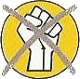 / 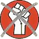: Free with yellow (red) card for West (East). Costs 1 dismantle for other cards (If not possible, unrest removal forbidden).
Build up economy: value of the card, not possible in province with mass protest. Factory costs 1. Infrastructure costs 1 and needs to have at least 1 factory at one end. An Infrastructure belongs to cities on both sides. Factory value: 1 + # working connections. Rundown factory value: 0 + # working connections.
Increase Living Standard (LS): up to 3 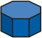, in different provinces. Max # possible in province = province economy / 3. Card value can boost to reach threshold, but not more than 2 per province. For each new :
Trigger card event: only own color or dual (see drawing color). Yellow (red and pink) icons affect West (East). Execute all the effect(s) if possible (choose order). Triggering player decides, except for icons with (West decides) and (East decides).
Non executable arrows: or for prestige line, you may place a new in opponent province.
Non executable icon: ignore, except if you need to dismantle more than you have (not opponent, in this case just ignore). If or executed: the card is not lined up at the bottom but put in front of the East player.
Dual card : you can ignore 1 arrow, or 1 icon for non-arrow icons.
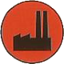 : 1 build point |
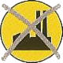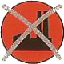 : 1 dismantle |
: can down to 3 |
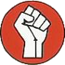 : add |
: |
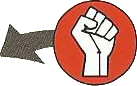 : Move internally |
: add |
: add , |
: remove |
: flip to 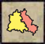 |
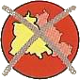 : flip to |
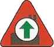 : repair rundown |
: rundown |
: remove a full and all connected 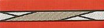 |
|
: see rules p6 |
: if executed, put in front of East |
|
5.1 Building: for each building point, build a new factory or a new infrastructure connected to at least one factory.
5.2 Dismantling: for each dismantling remove a factory or infrastructure. A factory with built infrastructure starting from it cannot be removed.
4. Mass protest: per 4 ==> 1 . If in East : must move as much as possible to cancel ().
8. Police power: and can be used once per decade to , during action or at the end of decade.
6.3 Province economy: sum of factories values in the province.
9.3 Export factory of a province: factory with the highest value.
East auto-loss: required to more than it can.
count on executed cards display + 1 per in West province with most + 1 per in front of East + 1 if at least 1 - 1 per in East province with fewest - 1 if at least 1 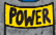 ==> Gives the number of spaces (from 0) you move the marker ==> Gives the number of East must face*. Then discard executed cards.
WC ($) track indicates East income of $. # East export factories whose value is >= to the worst West export factory = exports. WC = income + exports. For each , East need 1 WC. For each point short : *, and if not enough factories remove *.
for each province (East and West), remove any exceeding value of export factory. West Berlin: take worst supplier export factory
compare each of your province with your province with the most . Give # equals to the difference -1 (Exception: West Berlin : to the full difference, not -1)
Each province with can attack 1 opponent adjacent province (Exception: West Berlin attack both neighbors). Give # equals to the full difference in . Each or in attacking province prevents 1 from counting. Give possible new or at the end of the phase only
East executes available unused and card(s), and then discards any on these cards
East receives/loses on the holding box depending on the socialist track. Must be used to cancel if need be. In case of negative amount on socialist track, West removes from provinces and places instead.
East auto-loss: must discard , but no left. East auto-win: must add into the holding box, but no left
check victory. If 4+ () for East (West) ==> instant loss. If both, East wins. After 4 decades, East wins if no one loses.
* Player with most prestige chooses first, then alternate.
Designed by : Richard Sivél and Peer Sylvester
Published by : Histogame (www.histogame.de)
Reference sheet by christophe.denoize@free.fr.
Hamburg: Can be either part of Niedersachsen or Schleswig-Holstein. Choose at the beginning of an action / end of decade phase.
Rheinsberg: Can only be bought in play through card. Cannot be connected. You can use a instead of a . You can remove 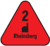 for a 2nd .
External factories: Build and remove only with event cards. A add its value to 1 connected province. Choose at the beginning of an action / end of decade phase.
East-Berlin: A province by itself (with only 1 city). Put and in the small map (top right), and the in the main map
West-Berlin: No . can be received from connected supplier with an increase living standard action, if the supplier has more than West-Berlin, or through the Start of the Computer Age event card. count twice.